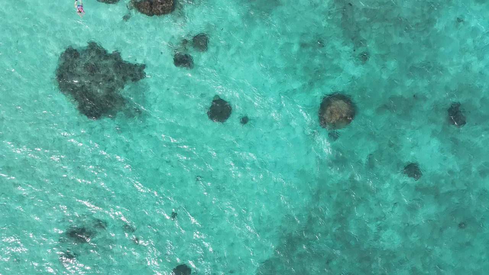

Photographie de surf et de plongée
Là où l'océan raconte l'histoire

Sélection


Allons shooter ensemble
Dites-moi où, quand et ce que vous avez en tête. Je réponds en général en moins d'une journée.
Écrivez-moi
Photographie de surf et de plongée
Sélection
Dites-moi où, quand et ce que vous avez en tête. Je réponds en général en moins d'une journée.
Écrivez-moi